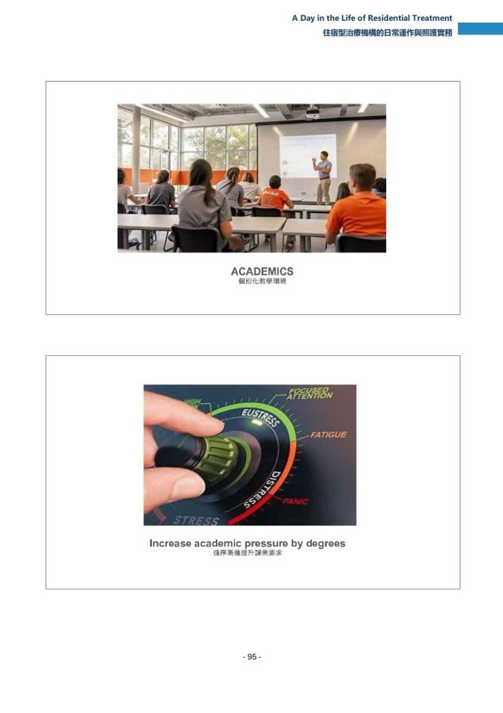
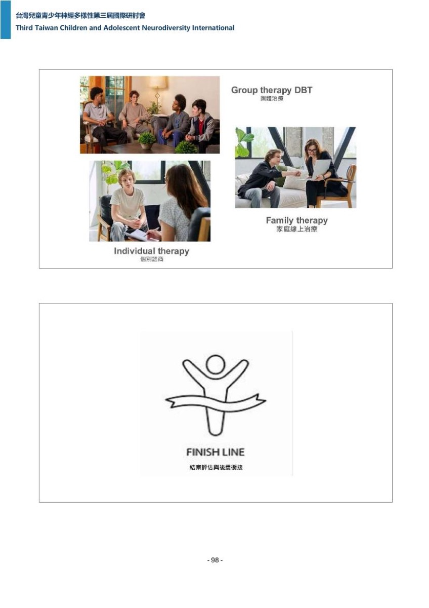
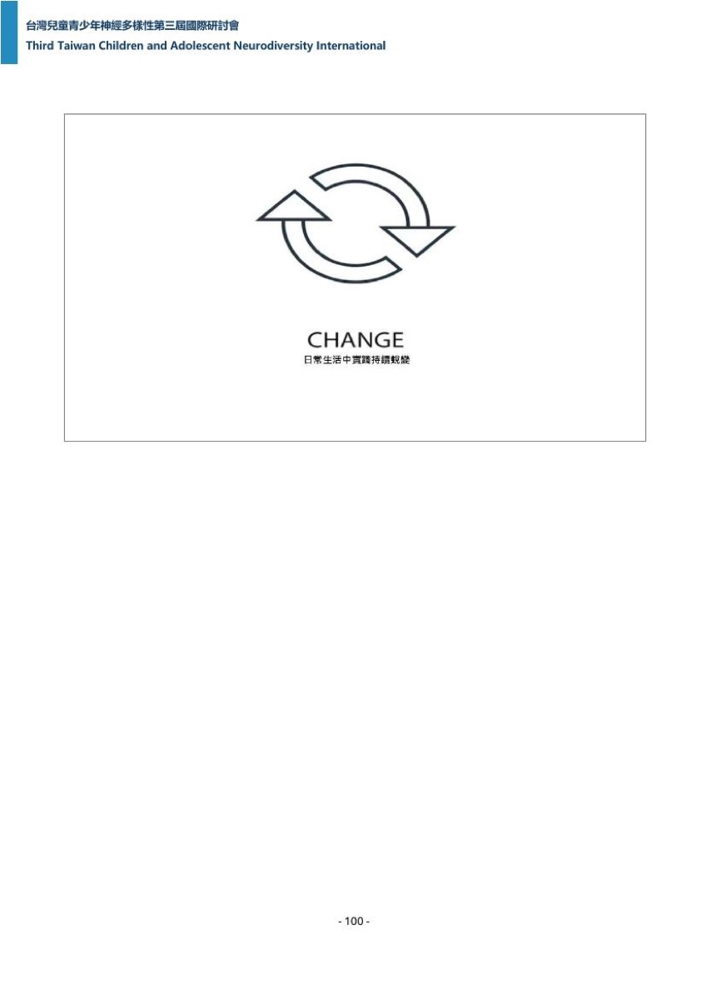

專題演講 · Session｜第 6 場
A Day in the Life of Residential Treatment
住宿型治療機構的日常運作與照護實務
錄音自講者主持的跨場小考起錄，首句被切在句中。
頁面內常見標記：推論／推定＝記錄者依現有資料的推測，不是講者原話；（口譯）＝現場口譯員的中文，不是講者本人的話；【校正】＝逐字稿明顯聽錯、記錄者改用正確寫法但保留原始聽寫。
要點
每條：主張（轉述，不加引號，用字以逐字稿為準）／依據（逐字引句與行號）／歸屬標籤／單點時戳（講者時戳，見〇節（3））。能對上投影片者附圖檔名與手冊行號。
雙錨點條目的寫法：規格 §四把要點上限訂在 15 條，而本場有 27 段可獨立成條的內容，故其中 12 條各含兩個錨點——第二個錨點以行內的
**又，[時戳]（歸屬標籤）**標出，時戳、歸屬標籤、依據行號都與獨立條目一樣完整。含雙錨點的是要點 1、3、4、5、6、8、10、11、12、13、14、15。
- 1｜[00:05:07] 全場核心命題：多數人一聽到住宿型治療，想像的是青少年整天坐在治療室裡；講者說那會很可怕，而且與事實相去甚遠——住宿型治療真正的內容是過生活，每一小時、每一餐、每一間教室、每一段友誼、每一次成功與每一次失敗都成為治療歷程的一部分。依據：兩遍各自單段逐字命中 "Okay, so when most people hear the phrase residential treatment, they imagine teenagers sitting in therapy all day."＋ "That couldn't be further from the truth."＋ "Residential treatment is really about living life."＋ "Every hour, every meal, every classroom,"＋ "every friendship, every success, and every failure."。口譯譯為「每一次的成功,每堂課,每一次的吃飯,每一次的失敗挫折都是一個復原歷程核心一環」。對應投影片 p-092.jpg 上半開場圖卡與下半提問頁，手冊 B :92／:93 的逐字欄依序為「Welcome to Telos／歡迎來到Telos全人中心」與「Why does residential treatment exist?／為什麼全日型住宿機構有其存在必要？」。 又，[00:05:36] 全場敘事框架：講者要帶大家參觀 Telos，請聽眾想像自己是一個 16 歲男孩，一起過一週的生活——這個框架在 [00:43:51] 被喚回收束。依據：兩遍各自單段逐字命中 "Today, I'd like to take you on a tour of T"＋ "Now imagine you are a 16 year old boy, let's spend a week together, what would that look like?"。口譯譯為「所以我今天就想帶大家來參觀一下T-Low是怎樣的一個環境」＋「大家先想像一下你自己是一位剛抵達T-Low Seagull的16歲青少年」＋「我們接下來要在這邊一起度過一週的生活」。
- 2｜[00:06:59] 為什麼需要住宿型治療：門診治療對某些青少年不夠用，因為他們的掙扎是全面性的——在家、在學校、在朋友之間、在面對權威時、在情緒上、在家庭裡；如果每一個環境都在加劇問題，那麼每一個環境都必須成為解方的一部分，住宿型治療就是把這些環境整併成一個協同的治療環境。講者並當場追問為什麼台灣還沒有這樣的機構。依據：英文逐字稿作 "Why does residential treatment exist?"＋ "And why doesn't it exist in Taiwan yet?"（:179 段#45，00:07:04,000–00:07:06,800）＋ "Because outpatient therapy isn't enough for every adolescent."（:183 段#46）＋ "Some teenagers struggle everywhere."（:187 段#47）＋ "At home, at school, with friends, with authority, with emotions, and with family."（:191 段#48）＋ "If every environment is contributing to the problem, then every environment must become a part of the solution."（:195 段#49，00:07:24,980–00:07:33,320）＋ "Residential treatment creates one coordinated therapeutic environment."（:199 段#50）＋ "Instead of seeing a therapist once a week, our students live inside of treatment."（:203 段#51）。口譯譯為「在代理大家參觀,我們要先回答一個問題,就是為什麼這種全日型的住宿是有存在的必要,特別是在臺灣我們還沒有看到有這樣的一個住宿機構」＋「那答案是因為對某些青少年而言」＋「每週一次的門診心理治療」＋「已經不足以符合他們的需求了」＋「每個環節都在加劇問題的時候,每個生活環境都必須被轉換成解放的一部分。」。對應投影片 p-092.jpg 下半的提問頁（手冊 B :93）。注意：這一段的英語原話在中文逐字稿同窗只有機器中譯，故整條屬第二級，不是第一級。
- 3｜[00:09:00] 轉介來源共四種（講者自己宣告的封閉量詞，本檔逐項枚舉到四種、與講者宣告一致）：私人教育顧問（最大宗，替家庭盤點教育與治療選項）、學區（例如伊利諾或加州，學區無法在州內滿足學生教育需求時可出資做跨州安置）、其他治療機構（野外治療、精神科醫院、急性照護與其他治療性機構）、網路。依據：兩遍各自單段逐字命中 " there's usually a long story behind the referral"——英文逐字稿該段全句起頭為 Now, before a student ever arrives at TELOS，中文逐字稿機構名作小寫 telos，故兩遍同窗同一字串只取尾句＋ " our referral sources generally come from four places"＋ "Our second largest referral source are school districts"；英文逐字稿另作 "Now, the first referral source, we call them private educational consultants."＋ "The third major source is other treatment programs, which includes wilderness programs, psychiatric hospitals, acute care settings, and other therapeutic programs."。口譯譯為「我們的來源有四個途徑」＋「第一個是私人教育顧問」＋「這是我們最大的來源」。對應投影片 p-093.jpg 上半，手冊 B :94 的逐字欄為「Where do our students come from?／我們的學生來自何方？」。 又，[00:12:04] 第四種來源網路最需要謹慎：前端篩檢資訊較弱，收到不適合本機構的學生的風險就上升；而適配度在住宿型治療裡極為要緊——對的學生在對的環境可以長好，錯的學生在錯的環境會傷害自己、也可能波及整個社群。依據：英文逐字稿作 "Now the last referral source is a common one the internet and occasionally we"＋ "these now why because the preliminary screening can be weaker and when the"（:335 段#84）＋ "who is not a good fit for our program, and fit matters enormously in residential treatment."（:343 段#86）＋ "The right student in the right environment can thrive, the wrong student in the wrong environment can negatively affect himself, and potentially the entire community."（:347 段#87，00:12:37,560–00:12:51,560）。口譯譯為「第四個的話有的學生是透過網路自己找到我們的」＋「那對於這類個案我們會很謹慎」＋「因為這類個案他們前端的篩檢資訊比較不完整」＋「但是不合適的環境的話反而會讓個案和整個這個群體帶來負面的影響」。
- 4｜[00:13:47] 收到轉介不等於收人：講者自問是不是轉介一來就說好、送來猶他，答案是絕對不行——機構做大量篩選，而且最重要的一件事發生在治療的最開頭，會花好幾個小時、甚至長達一週在電話上評估這個學生，確認他適不適合。依據：兩遍各自單段逐字命中 "Okay, before they become a student, so let's say the referral comes to us"＋ "One of the most important things we do happens at the very beginning of treatment."＋ "We spend approximately hours and hours, maybe even up to a week, assessing the student over the phone, making sure that he's a good fit."。口譯譯為「去瞭解,彌清說這個人是誰,他需要什麼,造成他現在有掙扎的核心原因是什麼,怎麼樣的一個治療方案才可以對他有幫助」。 又，[00:14:23] 入院前盡可能先做心理衡鑑，目的是看懂學生的認知優勢、認知弱項、學習樣貌與可能的診斷輪廓；但心理衡鑑只是拼圖的一片，機構自己另做一套完整的臨床心理社會評估。依據：兩遍各自單段逐字命中 " we want psychological testing before admission"——英文逐字稿在 possible 後有逗號、句末有句點，中文逐字稿兩者皆無，故兩遍同窗同一字串自 we 起、不含句點＋ "But psychological testing is only one piece of the puzzle"＋ "We also conduct our own comprehensive clinical psychosocial assessment"。對應投影片 p-093.jpg 下半，手冊 B :95 的逐字欄為「Assessment／個案全面評估」。
- 5｜[00:15:32] 評估用的是 Drew 當天講過的臨床輪盤，透過六個面向的透鏡看學生，另外也要知道同儕、科技使用、物質使用、家庭與學校——目的不只是弄清楚學生做了什麼，而是為什麼。依據：英文逐字稿作 "Now, okay. Okay, so yes, the clinical wheel. When we assess, we're looking at the student through six pieces of the lens. Biological, hardwiring, learned behaviors, characterological trauma and environmental factors. Well done. We want to know about peers, technology, substance use, family, school. We're trying to understand not just what the student does, but why."；講者指向 Drew 的句子兩遍各自單段逐字命中 "And Drew actually went through that today with the clinical wheel"。口譯譯為「然後除了就是我們可能的話會去取得他的心理學衡見,那除此之外我們還會進行就是剛剛講到最厲害的六大領域的這個評估」＋「所以我們要理解的不是學生現在有什麼樣的行為,而是去探究他背後的原因」。 又，[00:16:57] 最重要的資訊來自學生本人與他的父母——沒有人比學生自己更懂他的內在經驗，也沒有人比父母更清楚這個年輕人 18 年來怎麼長大；所以評估不是我們單方面對學生做的事。依據：兩遍各自單段逐字命中 "information comes from the student himself and his parents"＋ "and nobody has watched that young person develop over"＋ "assessment isn't simply something we do to a student"。這句話的後半兩遍互相矛盾：英文逐字稿作 "is something we do with it."、中文逐字稿作 "it's something we do with him."，本檔不併為同一引句。口譯譯為「那資訊來源就會是學生本人跟他的家長」＋「然後也沒有人可以比他的父母更瞭解他這18年來的這個成長軌跡」＋「所以評估不是我們單方面對學生做的事情」＋「而是我們和學生共同完成了一個合作的過程」。
- 6｜[00:17:18] 通常要三到五週，資訊才足夠到可以開始擬定並執行一份有意義的治療計畫。依據：兩遍各自單段逐字命中 "Typically, it takes us about three to five weeks"＋ "when we have enough information to begin developing"＋ "and implementing a meaningful treatment plan."。口譯譯為「那通常大概在第三到第五週的時候」＋「我們就可以收集彙整出我們足夠的資訊」。 又，[00:18:07] 精神科醫師也是評估的一環，負責看用藥需求、診斷考量、精神症狀與藥物管理；看診頻率由醫師依急性度與臨床需要決定，有的學生每週一次、有的一個月一次——講者把這件事收束回個別化治療。依據：英文逐字稿作 "Now, our psychiatrist, Dr. James Paraman,"＋ "who actually came here two years ago,"（:591 段#148）＋ "He is also a part of the assessment. He is assessing medication needs, diagnostic considerations, psychiatric symptoms, med management."（:599 段#150）＋ "The psychiatrist then determines how frequently he needs to see the student. Now, for some student class weekly, for others, it may be once a month."（:603 段#151）＋ "It depends on acuity and clinical need. Again, it's all about individualized treatment."（:607 段#152，00:18:33,760–00:18:39,760）。口譯譯為「就是面坦的頻率可能會是每週一次到每月一次都有可能」＋「那因為我們就是在強調就是個別化每一個人的計劃是很重要的」。對應投影片 p-094.jpg 上半，手冊 B :96 的逐字欄為「Psychiatry／精神醫療整合評估」。
- 7｜[00:19:04] 每一家住宿型機構都提供三大核心服務：住宿（食宿與生活照護，學生就住在那裡）、學業（一所有認證的學校，可以拿到文憑）、以及旗艦服務——治療性／臨床服務；講者把三者比喻成凳子的三隻腳，有一隻弱掉，整張凳子就倒。依據：兩遍各自單段逐字命中 "very residential program has three core services that they are offering"＋ "very residential treatment offers these three"；英文逐字稿另作 "Residential, that's room, board, and supervision, they live there."＋ "Academics is an accredited school, you can get a diploma there, and the flagship service are the therapeutic services, the clinical services."（:635 段#159）＋ "Think of these like three legs of a stool. If one is weak, the stool falls over. Let's look at each one in more depth."（:639 段#160）。口譯譯為「我們的服務是有分成三大類」與「這三個專案就像是一個三角的凳子一樣,是缺一不可。萬一有一個倒下來的話,那整張凳子就會壞掉。」。對應投影片 p-094.jpg 下半的三格照片頁，手冊 B :97 的要點欄為「Residential住宿生活（宿舍房間照片）、Academics個別化課業學習（教室照片）、Therapy專業臨床治療（一對一晤談照片）」。
- 8｜[00:20:28] 住宿服務的第一個原則是規模：Telos 每一棟宿舍平均約 10 名學生，人力配置大約是每 4 名學生配 1 名工作人員；人一多，學生的個別治療需求就會被稀釋，10 個學生已經是很可觀的人格、診斷、成長史、關係與治療需求的組合——目標不是看管學生，而是認識他們。依據：英文逐字稿作 "But before we get into that environment, there's another important principle, size matters."＋ "At Telos, each dormitory averages approximately 10 students, and we allocate approximately"（:671 段#168）＋ "one staff member for every four students. Now, why so much staffing? Because individual"（:675 段#169，00:20:41,220–00:20:48,800）＋ "treatment needs of students begin to get watered down. 10 students is already a significant"（:683 段#171）＋ "to supervise students, our goal is to know them."（:695 段#174）。口譯譯為「我們在TELOS每一個宿舍」＋「每一棟宿舍只收十個學生」＋「而且每四個學生會配三個工作人員」＋「因為個別化的關注是很重要的」。口譯的人力配比與英文逐字稿不一致，本檔主張句採英文逐字稿用字，兩者差異列。 又，[00:22:10] 住宿遠不只是吃住：想像 50 個青春期男生搬進同一個社區，人格不同、診斷不同、成熟度不同，總得有人教他們怎麼一起生活；住宿輔導員因此同時是老師、教練、榜樣、危機處理者、衝突調解人，有時甚至像代理父母，而且這個環境 24 小時不睡。依據：兩遍各自單段逐字命中 "Imagine moving 50 adolescent boys into one neighbo"＋ "Different personalities, different diagnoses, different levels of maturity."＋ "Someone has to teach them how to live together."＋ "Now, residential mentors become teachers, coaches, role models, crisis managers, conflict mediators"；英文逐字稿另作 "The residential environment never sleeps, it operates 24 hours a day."。口譯譯為「住宿照顧的服務不是隻提供他們吃住而已」＋「生活培託老師扮演的角色就很多元」＋「他們24小時都一起吃飯、用餐、起床、運動、上課、做家事、化解衝突、練習、情緒調節。」。對應投影片 p-095.jpg 上半，手冊 B :98 的逐字欄為「Residential: Room, Board and Supervision／住宿生活：日常食宿與生活照護」。
- 9｜[00:23:54] 學生情緒爆發不是麻煩而是教材：有人問學生生氣了怎麼辦，講者的回答是太好了、現在我們有東西可以教了；住宿環境每週製造數百個可教時刻，而這些時刻很少發生在治療室裡，它們發生在早餐、家事、作業、休閒活動、打架與衝突的當下——那正是輔導員無可取代的地方。依據：兩遍各自單段逐字命中 " people often ask me, what happens if a student gets angry? Wonderful! Now we have something to teach."＋ "Residential provides hundreds of teachable moments every week"＋ " during breakfast, during chores, during homework, during recreation, during fights and conflicts"。下一句兩遍語意相反：英文逐字稿作 "Residential provides hundreds of teachable moments every week. Those moments rarely happen in a therapy office."、中文逐字稿作 "Those moments really happen in a therapy office"；口譯譯為「這些時機點其實很少會真的發生在智商市裡面」，語意與英文逐字稿一致。本檔主張句採英文逐字稿用字並標註矛盾。口譯另譯為「我們生活在一起的話就會不斷的有適合給予教育意義的這些時機點的產生」＋「它其實更常出現在吃早餐、做家事、語言互動的真實瞬間」。對應投影片 p-095.jpg 下半，手冊 B :99 的要點欄為「將生活衝突與情緒失調轉化為學習教育契機」（該頁無英文標題，手冊原樣照抄）。
- 10｜[00:25:01] 學業服務的具體參數：每天早上 8 點上課、週一到週五；和多數學校不同，班級平均只有 6 名學生——因為許多學生有 ADHD、執行功能困難、學習障礙、在光譜上，或有憂鬱、焦慮，傳統教室會直接把他們淹沒；小班讓老師能個別化教學。課表採 A-B 制，每天上四門而不是八門，每節約 80 分鐘，目的是減少一天之內的轉換次數。依據：兩遍各自單段逐字命中 "I know you guys love your academics, you love your education."＋ "School begins every morning at 8am, Monday through Friday."＋ "Unlike most schools, our classrooms average only six students."＋ "they're on the spectrum, maybe they're depressed or anxious"＋ "Each class lasts approximately 80 minutes."；英文逐字稿另作 "Now, our school runs on an A-B schedule, so instead of taking eight classes every day, students attend four classes."＋ "Remember, processing kids don't do well with transitions."（:791 段#198）。口譯譯為「那許多的學生是有ADHD執行功能博弱,學習障礙、自閉、憂鬱、焦慮等等」＋「我們在T-Low是採用A-B課表」＋「每天只上四門課」＋「每節課是80分鐘」。對應投影片 p-096.jpg 上半，手冊 B :100 的逐字欄為「Academics／個別化教學環境」。 又，[00:27:44] 最特別的教育理念：先建能力、再提高要求——機構刻意降低課業的量，但不降低期待；因為許多學生來之前已經在課業裡溺水多年，如果只是再堆作業，等於複製失敗。做法是先教組織、規劃、時間管理、自我倡導、情緒調節與讀書習慣，等這些能力變強，才提高課業要求。依據：兩遍各自單段逐字命中 "We build capacity before increasing demand."＋ "We intentionally reduce academic volume."＋ "Because many of our students have spent years drowning."＋ "If we simply pile on more assignments, we recreate failure."；英文逐字稿另作 "Instead, we first teach organization, planning, time management, self-advocacy, emotional regulation, and study habits."＋ "Our philosophy is simple. Build capacity first, increase expectations second."（:847 段#212）。口譯譯為「那我們有一個比較獨特的教育理念會讓大家聽了可能會很驚訝」＋「就是我們會刻意降低課業的作業量」＋「那這不表示我們降低標準只是單純減量而已」＋「所以我們比較優先著重的是陪伴建立他們的組織規劃能力」。對應投影片 p-096.jpg 下半，手冊 B :101 的逐字欄為「Increase academic pressure by degrees／循序漸進提升課業要求」。
- 11｜[00:29:21] 每家機構的三大服務之外各有特色領域——有的做馬術、有的做野外、有的做物質濫用復元，而本機構的特色叫神經體適能。家長在孩子到達之前就會收到一張行李清單：公路車、安全帽、反光背心、跑鞋、泳衣、泳鏡、車衣；許多家長問治療中心為什麼需要這些裝備，講者的回答是因為訓練的不只是身體，是大腦。依據：兩遍各自單段逐字命中 "ome on substance abuse recovery. Our niche is called "；英文逐字稿另作 "We send them a packing list."＋ "They have to bring a road bike, a helmet, a reflective vest, running shoes, swimsuit, goggles, cycling clothing."（:887 段#222）＋ "And many parents ask, why does a treatment center need all this equipment?"（:891 段#223）＋ "Because we're training more than the body, we're training the brain."（:895 段#224，00:30:21,720–00:30:24,880）。口譯譯為「那在學生,到我們機構前啊,我們會寫一張行李清單給家長,然後家長看到會覺得很驚訝」＋「為什麼我們要準備腳踏車安全帽,背心,游泳衣,湧勁,還有腳踏車服」＋「為什麼這個TILOS會要我們準備這些裝備,那答案是我們不只是在鍛鍊大家的身體,更是在鍛鍊學生的大腦身經」。對應投影片 p-097.jpg 上半，手冊 C :24 的逐字欄為「NeuroFitness／神經體適能訓練」（記錄者開圖核對）。 又，[00:31:36] 體育課不只是打籃球，學生要備戰耐力賽事——鐵人三項、馬拉松、單車賽、長距離挑戰，每季一次；講者說每個青春期男孩終究會發現，身體的能耐遠比腦袋一開始相信的多，有些學生原本告訴自己做不到，跑完第一場半馬之後那句話就永遠消失了——自信是掙來的，不是給的。依據：英文逐字稿作 "These events happen quarterly, the racism, the goal, resilience."＋ "Now, one lesson every teenage boy eventually discovers is that their body is capable of"（:919 段#230，00:31:36,380）＋ "much more than your mind initially believes."（:923 段#231）＋ "Some students tell themselves, I can't do it, then they finish their first half marathon."（:927 段#232）＋ "And that sentence disappears forever."（:931 段#233）＋ "Confidence is earned."（:935 段#234）＋ "It's not given."（:939 段#235，00:32:02,500–00:32:03,500）。口譯譯為「我們每一季會要求他們去挑戰鐵人三項,就三鐵,然後半馬,還有長途腳踏車比賽」＋「那比賽本身並不是目標,而是resilience,就是這個復原力,韌性才是」＋「所以很多學生剛來Tilos的時候會說我做不到」＋「就是自信其實不是靠別人給的」＋「而是要親自迎來的」。對應投影片 p-097.jpg 下半，手冊 C :25 的逐字欄為「Confidence is earned／靠自己贏得自信」（記錄者開圖核對，圖面另見號碼布 0410）。注意：這一整段的英語在中文逐字稿同窗只有機器中譯，屬第三級；"Confidence is earned." 雖是投影片印刷文字，但不符本檔金句判準，列為下一輪認證候選。
- 12｜[00:32:28] 週末也被做成治療：多數青少年早就很會消磨時間——打電動、大麻、滑社群媒體、無止盡地刷、睡掉整個下午；機構不是要拿掉休閒，而是重新定義休閒，用新的熱情取代舊習慣。依據：兩遍各自單段逐字命中 "Most adolescents already know how to waste time"；英文逐字稿另作 "What happens on the weekends, Saturday and Sunday?"＋ "Gaming, marijuana, scrolling social media, doom scrolling, sleeping all afternoon."（:975 段#244）＋ "We aren't trying to remove recreation, we're trying to redefine it."（:979 段#245，00:32:58,460–00:33:02,460）＋ "So the idea is to replace old habits with new passions."（:983 段#246）。口譯譯為「到了週末也沒有閒著,我們就給他們休閒治療,把休閒也變成一種治療,就是有一些青少年他們來到機構前就過得很沒有,就是在殺時間,他們會打電動啊,吸大麻,或是劃社群媒體,或是睡到下午之類的,那我們並不是要剝奪他們的休閒時間,而是要重新賦予休閒的健康意義。」。對應投影片 p-098.jpg 上半，手冊 C :26 的逐字欄為「What do we do over the weekends?／週末休閒運動治療」。 又，[00:34:28] 四季決定休閒內容——冬天滑雪（距 Sundance 滑雪場只有 25 分鐘）、春天登山車、夏天釣魚、秋天攀岩，每個季節引進另一種健康的身分認同；講者以一名他親自帶過的學生為例：來自舊金山的 Carson 原本自我認同是滑板客、大麻使用者、反權威、次文化，攀岩根本不在他的雷達上，後來卻愛上攀岩，現在帶隊做攀岩探險——機構不是單純消除大麻，而是用目標感取代它。依據：兩遍各自單段逐字命中 "His name is Carson and he's from San Francisco"＋ "Now he identified himself as a skateboarder"＋ "e're only 25 minutes away from the Sundance "；英文逐字稿另作 "In the spring, we mountain bike. In the summer, we fish. In the fall, we rock climb."＋ "But over time, something changed. He discovered climbing. And you know what? Today, he leads climbing expeditions throughout Southern Newtown. We didn't simply eliminate marijuana. We replaced it with purpose. That is recreation therapy."。口譯譯為「可是在我們的陪伴下,他接觸了攀巖」＋「那他就找到了人生的目標感」＋「更用這個人生的新目標取代了原來的空虛」＋「這就是休閒治療的意義」。
- 13｜[00:35:48] 晚上也有結構：治療不會在放學或晚餐後結束，每個晚上有主題——週一與週三是付費活動，學生依宿舍功能運作得好不好（整潔、團隊合作、情緒上安不安全）賺取零用錢；週二與週四同樣有活動但不涉及金錢，刻意教青少年玩樂不必花錢；週五是講者最喜歡的服務日，去食物銀行、社區專案與志工組織——他說對付自我中心最健康的解藥之一，就是去服務別人。依據：英文逐字稿作 "Now, treatment just doesn't end at the end of the school."＋ "has a theme, Monday and Wednesday are paid activities, students earn spending money based"（:1051 段#263）＋ "emotionally safe, Tuesday and Thursday they still have activities but it involves no money,"（:1059 段#265）＋ "Friday, my favorite, is service."（:1067 段#267）＋ "We go to food banks, community projects, volunteer organizations."（:1071 段#268）＋ "One of the healthiest antidotes to self-centeredness is serving someone else."（:1075 段#269，00:36:33,500–00:36:38,040）。口譯譯為「比如說每個禮拜一」＋「來賺取自己的利用錢」＋「那週五是我最喜歡的社會服務日」＋「我們會帶孩子前往食物銀行」＋「這也是一個治療自我中心過剩或是內耗的一個面量」。對應投影片 p-098.jpg 下半，手冊 C :27 的逐字欄為「Students engage in meaningful service every week.／學生每週參與有意義的服務學習」。 又，[00:37:28] 每週的臨床服務配置：個別治療、家庭治療、團體治療、精神醫療、護理、會診與治療計畫；週一到週四做團體，有的教辯證行為技巧、有的教情緒調節、有的聚焦關係、有的處理當天真實發生的困擾——學生很快就發現不是只有自己在掙扎，光是這個發現本身就有療效。家庭治療每週一次、多半透過 Zoom，而且家長不是來探視治療，是來參與治療。依據：兩遍各自單段逐字命中 " focus on relationships, others process real struggles occurring "＋ " I'm not the only one struggling. That realization alone is therapeutic."；英文逐字稿另作 "Every week, we have individual therapy, family therapy, group therapy, psychiatry, nursing,"＋ "Once each week family therapy usually over Zoom and parents don't visit treatment, they participate in treatment."（:1123 段#281）＋ "When the family changes, the adolescent has a far greater chance of maintaining progress after discharge."（:1127 段#282）。口譯譯為「週一到週四我們有團體治療」＋「事情發生的時候原來不是隻有我一個人會覺得痛苦」＋「我們除此之外還有每週一次的個別心理治療,還有每週一次的家庭系統治療,會透過線上進行,我們希望父母不是整個治療計畫的旁觀者而是可以主動參與,因為我們非常需要家長的參與。」。對應投影片 p-099.jpg 上半，手冊 C :28 的逐字欄為「Group therapy DBT／團體治療；Individual therapy／個別諮商；Family therapy／家庭線上治療」（記錄者開圖核對，三個標籤在同一張投影片上並列）。
- 14｜[00:39:35] 結案標準：不是因為住滿了幾個月、不是因為學生想回家、也不是因為保險授權到期；學生結案的條件是治療目標已實質達成、精神症狀顯著下降、適應行為增加——換句話說，要看到學生能以不同方式運作的證據。而終極目標是轉移：機構要的不是在機構裡表現很好的學生，是離開機構後也能過得很好的學生；真正的檢驗是這裡養出來的能力能不能轉進生活——他能不能自我調節、負起責任、經營關係、做出健康的決定、帶著一套不同的行為回到家庭與社區。依據：英文逐字稿作 "When do we decide if a student is finished?"＋ "Not simply because a certain number of months have passed,"（:1143 段#286）＋ "and not simply because his insurance authorization ends."（:1151 段#288）＋ "The student discharges when the treatment goals"（:1155 段#289）＋ "And when we see an increase in adaptive, and when we see an increase in adaptive behaviors, in other words, we're looking for evidence that the student can function differently."（:1171 段#293，00:39:56,020–00:40:08,400）；轉移那一段兩遍各自單段逐字命中 "he real test is whether the skills developed here transfer into life"。口譯譯為「不是說看他住了幾個月,也不是說他想要回家」＋「結案的標準是我們治療目標已經實質達成了」＋「想要改善症狀已經下降了,然後也具備充足的適應行為,它可以運作得很好,這樣才是我們的標準。」＋「我們需要看到的是他離開TELOS以後還是可以生活得很好」。對應投影片 p-099.jpg 下半，手冊 C :29 的逐字欄為「FINISH LINE／結案評估與後續銜接」（記錄者開圖核對）。 又，[00:41:33] 出院不是關係的終點：出院後最長 60 天，家庭可以和一位後續銜接專員合作，目的是適應——因為回家可能比大家想的更難；在機構裡有常規、有課表、有工作人員、老師、治療師、有結構，然後突然之間學生就在家裡了，銜接專員的工作就是補上那個落差，其中一個首要目標是讓家長與學生對未來的界限與期待取得一致。依據：兩遍各自單段逐字命中 "Well, our relationship with the family doesn't necessarily end on a discharge"＋ "For up to 60 days after discharge, the family can work with an aftercare specialist"＋ "At Telos, there are routines, schedules, staff, teachers, therapists, structure."＋ "The aftercare specialist helps bridge that gap."；英文逐字稿另作 "One of the primary goals is to make sure the parents and the student are aligned around future boundaries and expectations."。口譯譯為「就是在結案之後,我們還是會有一個追蹤專員去持續關心這個孩子」＋「才可以確保說這個孩子從我們的機構」＋「他回家以後還是可以很順利先接過渡期」。
- 15｜[00:42:36] 誰讓學生改變：常有人問哪一個部門對學生的改變貢獻最大，講者的答案是沒有任何一個——學生會改變是因為各部門一起工作：住宿發現了什麼、學業確認它、臨床探究它、護理評估它、領導層支持它，每一個觀察都算數。依據：英文逐字稿作 "So who changes the student? People often ask me, what department changes the student the most?"＋ "The answer is none of them. Students change because departments work together. Residential"（:1247 段#312）＋ "notices something, academics confirms it, clinical explores it, nursing evaluates it,"（:1251 段#313）＋ "leadership supports it, and every observation matters."（:1255 段#314，00:43:05,160–00:43:10,160）。口譯譯為「那我的答案是 大家都不是單打獨鬥的」＋「就是因為我們有跨專業的團隊」＋「我們的住宿生活陪考師他發現生活上面的問題」＋「我們有一個很強大的教學團隊可以去驗證教學觀察」。對應投影片 p-100.jpg 上半，手冊 C :30 的逐字欄為「SYNERGY／跨專業團隊協作」。 又，[00:43:35] 全場收束：回到那個 16 歲男孩——他起床、吃早餐、上學、運動、去治療、和另一個學生起衝突、工作人員陪他處理、寫完作業、去攀岩、打電話給父母、受挫、自我調節、上床，明天再做一次；重複本身就是治療；接下來那一句兩遍逐字稿都作 we are waiting for one magical therapy session，再下一句是創造數百次讓學生練習成為不一樣的自己的機會。最後講者把住宿型治療定義成：它不只是住所、不只是治療、也不只是學校，而是對一個青少年日常生活的刻意設計——因為治療終會結束、學校會結束、住宿會結束、後續銜接也會結束，留下來的是他們學會過的那種生活方式。依據：兩遍各自單段逐字命中 "he wakes up, he gets his breakfast, he goes to school, he exercises, he attends therapy"＋ "he has a conflict with another student, a staff member helps him process it"＋ "he completes his homework, he goes rock climbing, calls his parents, he gets frustrated"＋ "e are waiting for one magical therapy session"；英文逐字稿另作 "It simply isn't therapy and it simply isn't school, it is the intentional engineering of an adolescent's daily life."＋ "Because eventually therapy ends as the school, residential ends, aftercare ends, and what remains is the lifestyle they have learned to live."（:1275 段#319，00:45:12,980–00:45:23,820）。口譯譯為「每一次的實踐生活就是最好的治療」＋「所以並不是某一次的諮商物談會發生的奇蹟」＋「不是隻是住宿,也不是隻是心理智商」＋「那是一個全方位的衛青少典提供日常生活的系統」＋「最後留下來陪伴孩子的是他們真正有學會」。對應投影片 p-101.jpg，手冊 C :32 的逐字欄為「CHANGE／日常生活中實踐持續蛻變」（手冊記為本場結尾頁，該頁僅一張投影片、下半頁留白）。
投影片
手冊第 91 頁

手冊第 92 頁
手冊第 93 頁
手冊第 94 頁

手冊第 95 頁

手冊第 96 頁

手冊第 97 頁

手冊第 98 頁

手冊第 99 頁

手冊第 100 頁
金句
- 「Residential treatment is really about living life.」 [00:05:18]（音訊認證 ✓）
- 「We spend approximately hours and hours, maybe even up to a week, assessing the student over the phone, making sure that he's a good fit.」 [00:14:02]（音訊認證 ✓）
- 「assessment isn't simply something we do to a student」 [00:17:10]（音訊認證 ✓）
- 「Someone has to teach them how to live together.」 [00:22:31]（音訊認證 ✓）
- 「Residential provides hundreds of teachable moments every week」 [00:24:16]（音訊認證 ✓）
- 「For up to 60 days after discharge, the family can work with an aftercare specialist」 [00:41:38]（音訊認證 ✓）
Q&A
本檔無現場 Q&A 段（沒有任何聽眾向講者提問）。錄音涵蓋 00:00:00–00:46:25 全場，未見聽眾提問或主持人徵詢提問。依據：
- 中文逐字稿以提問／請問／舉手／發問／Q&A／麥克風／聽眾／觀眾枚舉，0 行命中。
中文逐字稿完全開放地枚舉問，得 16 行，逐行檢視同樣全是講者內容或口譯用語。 但本場有三段由講者提問、聽眾作答的互動（講者以送書當獎品），逐段列表如下：
| # | 時戳 | 提問（逐字） | 聽眾作答（逐字，提問者／作答者未具名） |
|---|---|---|---|
| 互動 1 | [00:00:00]–[00:03:55] | 七題小考，講者自陳題庫來自當天的演講——英文逐字稿作 " questions from this morning's lectures okay now if you raise your hand you can refer to your notes" | 逐字錄到的答案有：" personal responsibility yes and uh resilience resilience excellent give her a round of applause"、" that you should be an expert way of being flexibility yes Linda gets the book"、" a neurodiverse student. We just heard this lecture. Yes? Rigidity. That's one. Give"、" me another one. Emotionally dysregulated. Give me one more."、" Yes, disorganized. Well done, well done. Okay, brilliant. Thank you. Round of applause." |
| 互動 2 | [00:13:24]–[00:13:45] | 講者請聽眾複述四個轉介來源——兩遍各自單段逐字命中 " name the four referral sources that we typically use at T" | " One for the educational consultants and the state of business."＋ " And the site of study."；中文逐字稿同窗作 "We're an educational consultant"＋ "And the state placement"——兩遍對同一句聽眾答話的聽寫差異很大，本檔不擇一 |
| 互動 3 | [00:14:46]–[00:15:23] | 講者請聽眾複述臨床輪盤的六個構面——英文逐字稿作 " and we go deep we look at okay who can name them all six clinical wheel" | " true they actually listen to them biological factors yes"＋ " Hard wiring, cognitive strengths, excellent. You grab a book. There you go, my love. This is all yours. There you go. Well done. Well done."；中文逐字稿同窗保留同樣的英語 |
整理者註記
- 錄音起點前缺口長度不明。本檔可確定小考在錄音起點前已經開始（〇節（5）依據 3），但無法判定缺口是幾秒還是幾分鐘；錄音 46 分 25.9 秒比議程 50 分鐘短約 3 分 34 秒，缺口可能在前、也可能本場提早結束。若另一台裝置有同場錄音，應以其起點複核。
對國教盟（國教行動聯盟）的意涵
- 推論：在本檔可見範圍內，本場把住宿型治療全流程從頭到尾走了一遍（前提：要點 1 的核心命題 [00:05:07]、要點 7 的三大核心服務 [00:19:04]、要點 14 的結案標準與銜接 [00:39:35]／[00:41:33]、要點 15 的跨專業協作 [00:42:36]，四個錨點都有時戳與投影片對應），可作為國教盟研議台灣是否需要中重度支持機制時的國際對標案例；但台美在財務（保險授權、學區出資跨州安置）與法制上的落差極大，不宜把流程直接搬成政策主張。
- 推論：講者在 [00:07:04] 當場問為什麼台灣還沒有這樣的機構（前提：要點 2），這句話的性質是外國講者的現場觀察與提問，不是本盟的結論；若引用，必須標明是講者提問，並且不得改寫成 專家指出台灣缺乏住宿型治療 這種判定句——本檔在受信任層裡沒有任何台灣現況的資料可以支持那種升級。
- 推論：最可能被台灣現場拿去用的不是機構本身，而是幾個可拆解的設計參數：宿舍規模與人力配比（要點 8，[00:20:28]）、小班與 A-B 課表、減量不減期待（要點 10，[00:25:01]／[00:27:44]）、結案標準與出院後 60 天銜接（要點 14，[00:39:35]／[00:41:33]）。這三組可以整理成一張對照清單，供國教盟與縣市討論中介型支持方案時逐項比對；但清單上每個數字都只有講者口述這一個來源、投影片一個數字都沒印（五節全表前提），對外使用時必須逐項標註。
- 推論：對教師與家長最有說服力的兩句，是要點 9（[00:23:54]：每週數百個可教時刻，而且很少發生在治療室）與要點 5 第二錨點（[00:16:57]：評估不是單方面對學生做的事）——這兩句與同一位講者在 S03 場次提出的生活陪跑取徑同一方向（S03 記錄
場次記錄/S03_BarryFell_從心理健康支持到生活陪跑師.md:57 要點 9、:70 要點 13）——那是講者本人的概念，不是國教盟的既有論述，適合做教師版與家長版說帖的核心句。但前一句在兩遍逐字稿上語意相反，對外引用前必須先過音訊認證閘。 - 推論：本檔的英文逐字稿在多個口譯時段整組退化成同一句的複製，檔尾更把一段中文致詞強制解碼成講者沒說過的英文句（〇節（5））——這證明強制解碼的逐字稿不可直接出版（前提：要點 9 的 rarely／really 矛盾與〇節（5））。國教盟若要把本場放上全紀錄網站或做成教材，每一句對外引語都必須先過音訊認證閘或人工複核，逐字稿頁也應標明哪些段落是解碼偽影。
依 2026-09-12 現場錄音逐字稿整理（約 50 分鐘）；本場金句經音訊認證。 看完整逐字稿 →